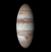
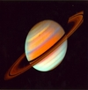

| Planets Stats |  MERCURY MERCURY |
EARTH | JUPITER | SATURN |
|---|---|---|---|---|
| Mass (kg) | 3.3 * 10^23 | 5.98 * 10^24 | 1.90 * 10^27 | 5.69 * 10^ 26 |
| Diameter (km) | 4879.4 | 12756 | 142,800 | 120660 |
| Mean Density (kg/m)3 | 5420 | 5520 | 1314 | 690 |
| Escape velocity (m/s) | 4300 | 11200 | 59500 | 35600 |
| Average distance from Sun | 0.387 AU (57,909,175 km) | 1.00 AU (149,597,890 km) | 5.203 AU (778,412,020 km) | 9.537 AU (1,426,725,400 km) |
| Rotation period(length of day in Earth days) | 58.65 | 1 (23.93 hours) | 0.41 (9.8 Earth hours) | 0.44 (10.2 Earth hours) |
| Revolution period (length of year in Earth days) | 87.97 | 365.26 | 11.86 | 29.46 |